Подготовьте кабель провайдера, устройство для подключения к роутеру и данные от провайдера, если у вас используется PPPoE.
Адрес админки: http://192.168.1.1.
Логин: root, пароль: 12345678.
Если интернет работает через DHCP, логин и пароль провайдера обычно не нужны.
Если интернет работает через PPPoE, заранее найдите логин и пароль из договора или личного кабинета провайдера.
Вход в админку для первого подключения
Подключите кабель провайдера в WAN порт роутера.
При необходимости подключите устройство по LAN кабелю (например, в порт LAN1).
Откройте в браузере http://192.168.1.1.
Логин: root, пароль: 12345678.
Если не получилось
Проверьте, что кабель провайдера подключен именно в WAN, а компьютер — в LAN.
Отключите VPN на компьютере/телефоне и попробуйте другой браузер.
Если адрес не открывается, переподключитесь к Wi‑Fi роутера или используйте LAN-кабель.
Подключите кабель провайдера в WAN-порт, а устройство — в LAN-порт.Страница входа в админку OpenWrt по адресу 192.168.1.1.
Как поменять тип подключения
Перейдите в Сеть → Интерфейсы.
Откройте настройки интерфейса WAN.
Выберите протокол PPPoE и введите логин/пароль от провайдера.
Нажмите Сохранить, затем Применить.
Проверьте, что интернет-подключение стало активным.
Если не получилось
Уточните у провайдера, нужен ли PPPoE или достаточно DHCP.
Проверьте логин и пароль PPPoE без лишних пробелов.
После применения подождите 1–2 минуты и обновите страницу интерфейсов.
Откройте раздел «Сеть → Интерфейсы».Найдите интерфейс WAN и откройте его настройки.Выберите PPPoE и введите данные от провайдера.После сохранения примените изменения.
DHCP: не открывается страница логина провайдера
Позвоните провайдеру и сообщите, что вы заменили роутер. Обычно нужно обновить MAC-адрес на стороне провайдера.
Если не получилось
Проверьте, что WAN-интерфейс получает IP-адрес от провайдера.
Попросите провайдера обновить MAC-адрес или сбросить привязку оборудования.
Перезагрузите роутер после смены MAC-адреса на стороне провайдера.
Как поменять название Wi‑Fi и пароль
Откройте Сеть → Беспроводная сеть.
Нажмите Изменить для 2.4G и 5G сетей.
Измените имя сети (SSID) и пароль.
Сохраните и примените настройки.
Если не получилось
Проверьте, что меняете нужную сеть: 2.4G или 5G.
Используйте пароль от 8 символов и без кириллицы для старых устройств.
После смены имени сети удалите старую сеть на телефоне и подключитесь заново.
Откройте список беспроводных сетей.Измените имя сети в поле SSID.Задайте новый пароль и сохраните настройки.
Как добавить свой сайт в обход
Перейдите в Службы → podkop → Секции.
В разделе «Тип пользовательского списка доменов» выберите Текстовый список.
Добавьте домены в формате ya.ru (без https://).
Примените изменения. Если нужно, перезапустите podkop в разделе «Диагностика».
Если сайт не открывается сразу, проверьте в режиме инкогнито или в другом браузере.
Если не получилось
Добавляйте только домен, например example.com, без https:// и пути.
Проверьте сайт в режиме инкогнито, чтобы исключить кеш браузера.
Перезапустите podkop в диагностике и проверьте статус секции.
Перейдите в секции podkop.Выберите текстовый список доменов.Добавляйте домены без https:// и лишних путей.Примените изменения после редактирования списка.
Как перезапустить AdGuard VPN
Откройте командную строку (Win + R → cmd).
Подключитесь к роутеру: ssh root@192.168.1.1.
При запросе ключа введите yes, затем пароль роутера.
Запустите команду:
/opt/adguardvpn_cli/adguardvpn-cli connect -l PL
После выполнения команды окно можно закрыть.
Если не получилось
Проверьте, что компьютер подключен к сети этого роутера.
При первом SSH-подключении введите yes для подтверждения ключа.
Если команда не сработала, проверьте, что путь к AdGuard VPN совпадает с указанным.
Подключение к роутеру по SSH из командной строки.
Как заменить изначальную настройку и поставить свой VPN
Откройте Службы → podkop → Секции.
В секции main у вас из коробки стоит AmneziaVPN под блок РКН. Эту секцию не меняем, а добавляем новую. Вам нужно опуститься в самый низ и добавить новую секцию "VPN".
Выберите тип подключения Proxy.
Заполните параметры своего VPN (например, VLESS).
Примените изменения.
Если не получилось
Не меняйте секцию main, если она отвечает за готовый обход РКН.
Проверьте протокол, адрес сервера, порт, UUID и параметры безопасности.
После применения откройте диагностику podkop и посмотрите, не горит ли секция красным.
Добавьте отдельную секцию для своего VPN.В качестве типа подключения выберите Proxy.Заполните параметры своего VPN-подключения.
Как добавить несколько конфигураций VLESS VPN?
Откройте Службы → podkop → Секции.
Создаем новую секцию VPN или используем уже существующую.
Выберите тип подключения Proxy.
Тип конфигурации указываем URLTest для автоматического выбора локации с наименьшей задержкой. Для ручного выбора ставим тип Selector.
Вставляем конфигурации VLESS (либо другой протокол из доступных) по очереди в поле Ссылки прокси для URLTest.
Выставляем параметр Интервал проверки URLTest, который отвечает за частоту опроса пинга локаций.
Примените изменения.
Если не получилось
Убедитесь, что каждая VLESS-ссылка вставлена с новой строки и полностью скопирована.
Для ручного выбора используйте Selector, для автоматического — URLTest.
Если одна локация не отвечает, временно удалите её и примените настройки повторно.
Откройте настройки секций podkop.Создайте или откройте секцию VPN.Добавьте несколько VLESS-конфигураций в URLTest или Selector.
Перестал работать YouTube, Instagram и другие сайты в блоке
В случае, если у вас пропал доступ к сайтам YouTube, Instagram и другим заблокированным РКН, вам нужно попробовать обновить конфиг AmneziaVPN. Как это сделать ниже.
В диагностике podkop первая секция main, где используется Amnezia, горит красным.
Скачайте новый конфиг и импортируйте именно содержимое файла, а не ссылку на него.
Проверьте, что интерфейс AmneziaWG включен после применения настроек.
Если podkop всё ещё красный, перезапустите сервис и обновите страницу диагностики.
Откройте интерфейс AmneziaWG в настройках сети.Импортируйте новый конфигурационный файл AmneziaWG.
Как обновить DNS в podkop, если часть сайтов не открывается
DNS в podkop отвечает за то, как роутер узнаёт IP-адреса сайтов перед маршрутизацией. Если DNS отвечает нестабильно или выбранный протокол не проходит у провайдера, podkop может быть включён, но одна часть сайтов всё равно не будет открываться.
Обычно это выглядит одним из двух способов:
Российские сайты открываются напрямую, но сайты, которые должны идти через VPN или обход, не загружаются.
Или наоборот: открываются только заблокированные сайты через VPN, а обычные сайты напрямую не открываются.
Как понять, что проблема именно в DNS
В браузере появляются ошибки вроде DNS_PROBE_FINISHED_NXDOMAIN, ERR_NAME_NOT_RESOLVED или похожие сообщения про DNS.
Проблема повторяется на нескольких устройствах в вашей Wi‑Fi сети, а не только на одном телефоне или компьютере.
Если нужная секция в диагностике podkop красная, сначала проверяйте VPN-конфиг или сервер. DNS чаще подозреваем, когда диагностика выглядит нормально, но сайты всё равно не открываются по доменным именам.
Если проверить разные сайты, видно разделение: работает только прямой интернет или только сайты, которые уходят через VPN.
После смены DNS в podkop и перезапуска сервиса ситуация меняется сразу или после переподключения устройства к Wi‑Fi.
Откройте Службы → podkop → Настройки.
В поле Тип протокола DNS выберите UDP незащищенный. Для обхода он часто работает стабильнее, чем DoH.
В поле DNS-сервер укажите 77.88.8.8.
В поле Bootstrap DNS-сервер укажите 77.88.8.1.
Сохраните и примените изменения.
Откройте Службы → podkop → Диагностика, перезапустите podkop и проверьте проблемные сайты ещё раз.
Что можно указать в DNS
77.88.8.8 и 77.88.8.1 — DNS Яндекса. Их можно использовать как простой рабочий вариант.
Можно попробовать и другие DNS-серверы, если они у вас стабильно работают или нужны под конкретную задачу.
DoH шифрует DNS-запросы, но для обхода может быть менее стабильным: если DoH-сервер или bootstrap-цепочка недоступны, сайты начинают открываться выборочно.
UDP незащищенный не шифрует DNS, зато часто проще проходит у провайдера и быстрее помогает проверить, что проблема была именно в DNS.
Если после применения ничего не изменилось, переподключите устройство к Wi‑Fi или перезагрузите его: старый DNS-ответ мог остаться в кэше.
Скриншот: Службы → podkop → Настройки podkop-dns-settings.png / .webp
Откройте общие настройки podkop.
Скриншот: Тип протокола DNS — UDP незащищенный podkop-dns-udp.png / .webp
Выберите UDP незащищенный вместо DoH.
Скриншот: DNS-сервер и Bootstrap DNS-сервер podkop-dns-servers.png / .webp
Заполните DNS-сервер и Bootstrap DNS-сервер, затем примените настройки.
Как прописать DNS для Xbox?
Откройте Службы → podkop → Настройки.
Ставим Тип протокола DNS — UDP незащищенный.
Переходим на сайт xbox-dns.ru и копируем там Основной (IPv4) и Дополнительный (IPv4).
Прописываем основной DNS в DNS-сервер и дополнительный в Bootstrap DNS-сервер.
Примените изменения.
Если не получилось
Проверьте, что выбран протокол DNS — UDP незащищенный.
Сверьте основной и дополнительный IPv4 DNS с сайтом xbox-dns.ru.
Перезагрузите Xbox или переподключите его к сети после применения настроек.
Откройте общие настройки podkop.Скопируйте основной и дополнительный IPv4 DNS.Укажите DNS-серверы в настройках podkop.
Как пустить весь трафик через VPN?
Это может быть полезно, когда вам нужно обойти проблему подключения на каком-то устройстве, но вы не знаете какой домен нужно прописать в podkop. Например, пустить весь трафик PlayStation через VPN, чтобы получить доступ к игре. Либо у вас возникает ошибка подключения умного устройства в приложении из-за блокировок.
Заходим на главную страницу админки, смотрим подключенные устройства. Чтобы понять, какой локальный IP у устройства, отключите и подключите его, обращая внимание на изменения в таблице устройств.
На нужном устройстве жмем «Закрепить IP».
Идем в Службы → podkop → Секции.
Ищем пункт «Полностью маршрутизированные IP-адреса» в секции нужного нам VPN и добавляем туда локальный IP-адрес устройства, который мы закрепили в прошлых пунктах.
Теперь весь трафик этого устройства будет идти через VPN. В альтернативном варианте вам нужно определить точные домены и прописать их в «Пользовательских списках».
Если не получилось
Убедитесь, что IP устройства закреплен и не меняется после переподключения.
Добавляйте именно локальный IP устройства, например 192.168.1.120.
Проверьте, что выбранная VPN-секция сама работает до маршрутизации всего устройства.
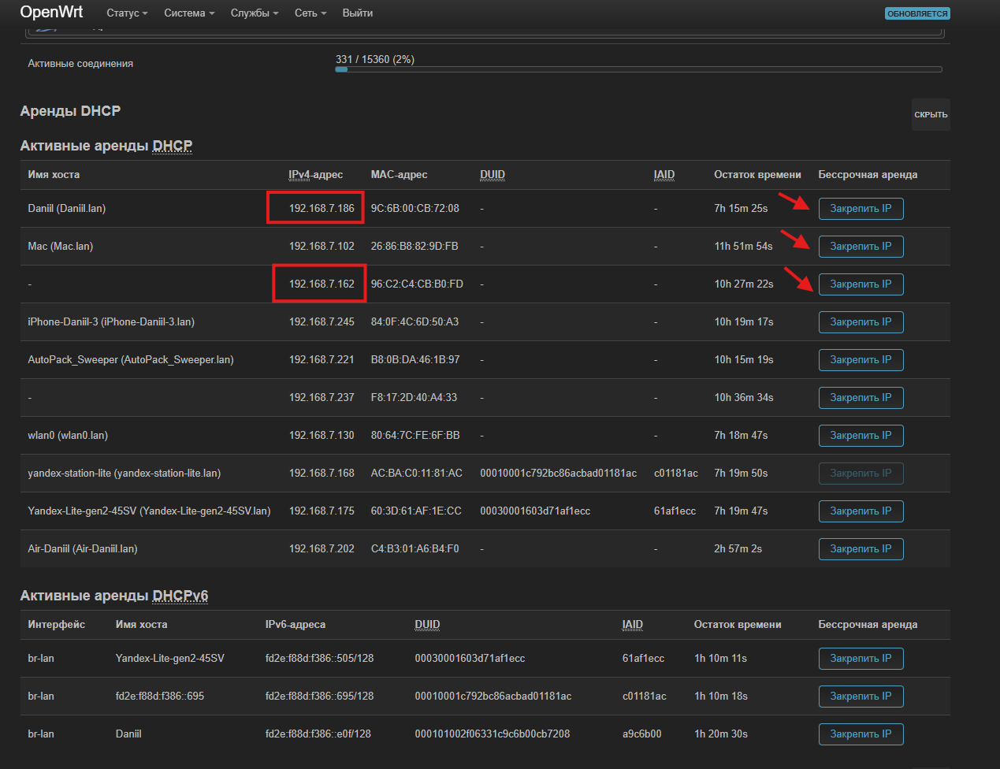
Найдите нужное устройство в списке подключенных клиентов.
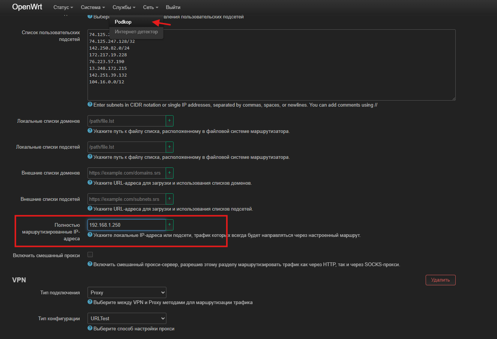
Добавьте закрепленный IP в полностью маршрутизированные адреса.
Устройство не видит Wi‑Fi (2G / 5G)
Проблема может быть из-за того, что у 2G или 5G сети стоит режим auto для выбора рабочего канала. При таком режиме может выставиться свободный канал, который не видит телевизор, телефон или другое устройство.
Идем в раздел Сеть → Беспроводная сеть.
Нажимаем изменить на 2G или 5G сети.
Проверяем, что стоит в пункте «Настройка частоты». Ставим самый первый доступный канал вместо auto, например 1 или 40. Ширину ставим 20 или 40.
Здесь же можно поэкспериментировать с частотой, мощностью, шириной канала. Проверяете все настройки и оставляете те, с которыми у вас самая высокая скорость передачи в сети.
Если не получилось
Для старых устройств сначала проверьте сеть 2.4G.
Поставьте фиксированный канал вместо auto и примените настройки.
Если сеть появилась, но скорость низкая, попробуйте другую ширину канала: 20 или 40 МГц.
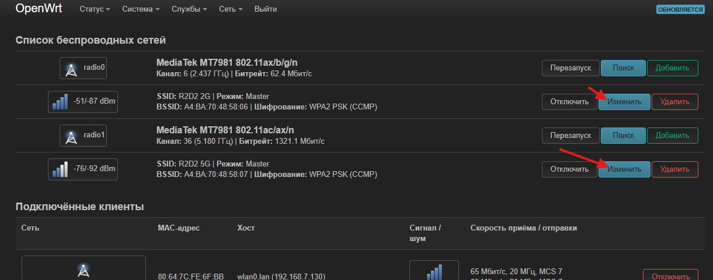
Выберите проблемную 2G или 5G сеть и откройте настройки.
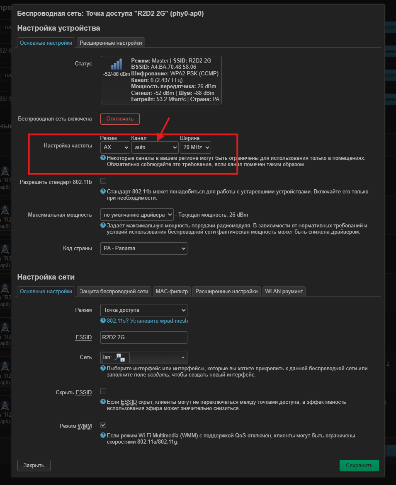
Замените auto на конкретный канал и проверьте видимость сети.
Как сделать резервную копию и восстановить настройки
Делайте резервную копию перед сменой VPN, настройкой podkop, обновлением или экспериментами с сетью. Это самый простой способ быстро вернуться к рабочему состоянию.
Откройте Система → Резервная копия / Обновление.
Нажмите кнопку создания архива и скачайте файл резервной копии на компьютер.
Переименуйте файл понятно, например openwrt-before-vpn.zip, и сохраните его в надёжном месте.
Для восстановления вернитесь в этот же раздел, загрузите архив резервной копии и примените восстановление.
После восстановления дождитесь перезагрузки роутера и снова откройте http://192.168.1.1.
Если не получилось
Если архив не скачивается, попробуйте другой браузер или отключите блокировщик загрузок.
Не восстанавливайте backup от другой модели роутера без необходимости.
Если после восстановления роутер не отвечает, подключитесь по LAN и подождите 2–3 минуты.
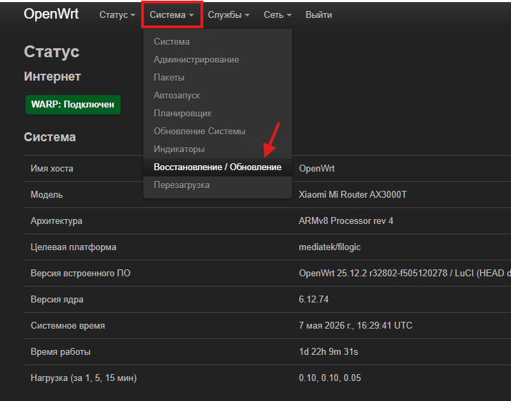
Откройте раздел Система → Резервная копия / Обновление.
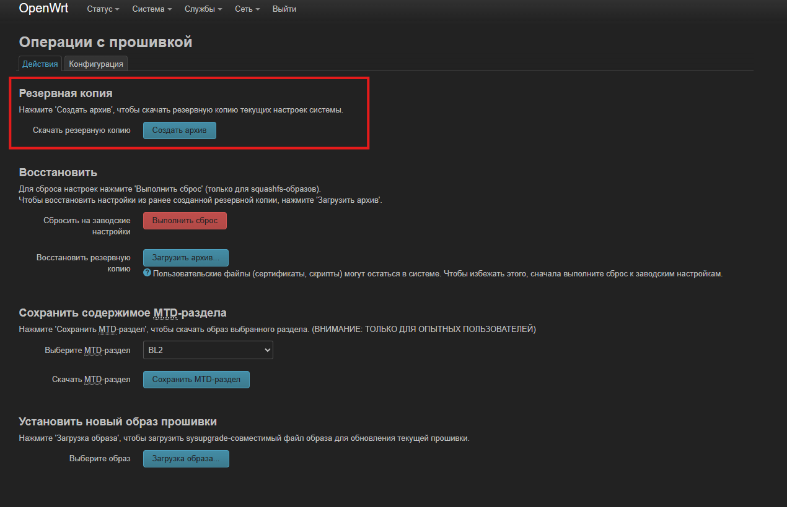
Скачайте архив резервной копии настроек на компьютер.
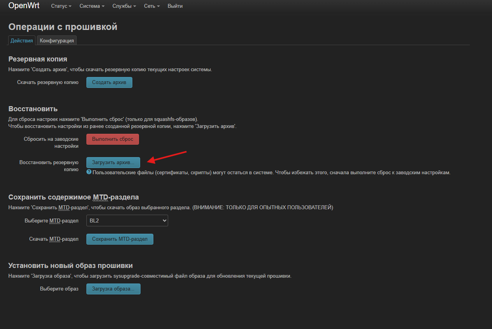
Для восстановления загрузите сохранённый backup-архив в этой форме.
Как поменять пароль администратора
Стандартный пароль лучше поменять после первого подключения, особенно если к роутеру будут подключаться другие люди.
Откройте Система → Администрирование.
Найдите блок смены пароля администратора.
Введите новый пароль два раза: в поле пароля и подтверждения.
Нажмите Сохранить, затем Применить.
Выйдите из админки и проверьте вход с новым паролем.
Если не получилось
Используйте пароль от 8 символов и сохраните его в менеджере паролей.
Проверьте раскладку клавиатуры и Caps Lock перед повторным входом.
Если пароль потерян, используйте раздел про сброс и восстановление доступа.
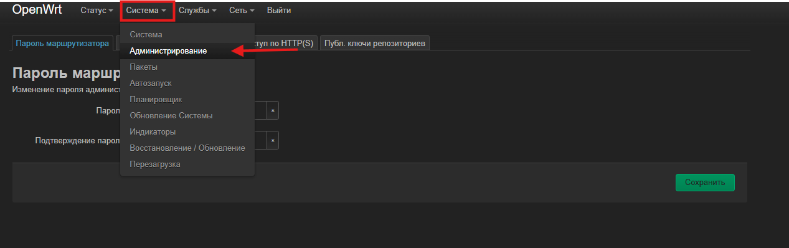
Перейдите в Система → Администрирование.
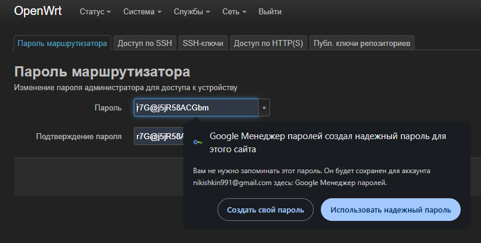
Введите новый пароль администратора и повторите его во втором поле.
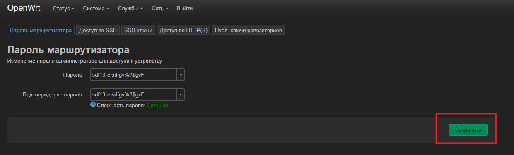
Сохраните изменение и примените настройки.
Как сбросить роутер и восстановить доступ
Сброс используйте как крайний вариант: он удаляет текущие настройки интернета, Wi‑Fi, podkop и VPN. После чистого reset на OpenWrt Wi‑Fi сеть обычно не поднимается, поэтому подключиться к роутеру получится только по LAN-кабелю.
Сначала попробуйте подключиться к роутеру по LAN-кабелю и открыть http://192.168.1.1.
Если админка не открывается, перезагрузите роутер питанием и подождите 2–3 минуты.
Если доступ всё ещё потерян, отключите питание роутера, зажмите кнопку Reset, включите питание и держите кнопку ещё 10–15 секунд.
Дождитесь, пока индикаторы моргнут: это признак, что сброс начался или уже применился.
После сброса подключитесь к роутеру только по LAN-кабелю и откройте http://192.168.1.1.
Перед восстановлением полной конфигурации установите недостающие пакеты podkop и AmneziaWG через SSH.
После установки пакетов восстановите backup через раздел резервной копии и дождитесь перезагрузки роутера.
Команды ниже запускайте после подключения по SSH к роутеру. Для OpenWrt надёжнее использовать вариант через wget | sh, потому что синтаксис sh <(wget ...) зависит от bash и может не работать в стандартной shell-среде роутера.
wget -O - https://raw.githubusercontent.com/Slava-Shchipunov/awg-openwrt/refs/heads/master/amneziawg-install.sh | sh
wget -O - https://raw.githubusercontent.com/itdoginfo/podkop/refs/heads/main/install.sh | sh
Если не получилось
Если после сброса не видно Wi‑Fi, это ожидаемо: подключайтесь к роутеру кабелем в LAN-порт.
Если индикаторы не моргнули, повторите reset: питание выключено → кнопка зажата → питание включено → держать 10–15 секунд.
Если backup восстановился не полностью, сначала установите podkop и AmneziaWG, затем повторите восстановление настроек.
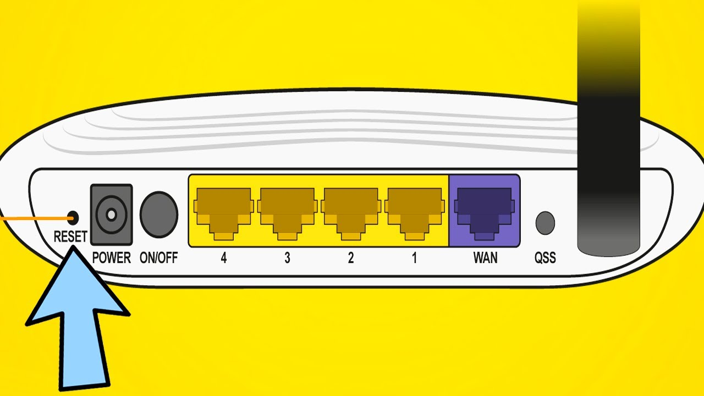
Кнопка Reset обычно утоплена в корпус, чтобы её не нажали случайно.
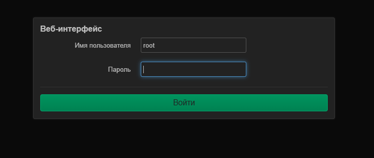
После сброса откройте админку по адресу 192.168.1.1, подключившись к роутеру по LAN-кабелю.Перед восстановлением backup установите недостающие пакеты podkop и AmneziaWG.
Диагностика podkop и VPN
Если сайты не открываются через обход или VPN, сначала смотрите диагностику podkop. Она быстрее всего показывает, какая секция не работает.
Откройте Службы → podkop → Диагностика.
Проверьте, нет ли красных секций или ошибок рядом с нужным подключением.
Если секция красная, проверьте конфиг VPN, домены и доступность сервера.
Перезапустите podkop из диагностики или примените настройки повторно.
После перезапуска проверьте проблемный сайт в режиме инкогнито.
Если не получилось
Красная секция часто означает ошибку в конфиге, недоступный сервер или неверный протокол.
Если меняли домены, убедитесь, что они указаны без https://.
Если не работает только один сайт, сначала добавьте его домен в пользовательский список.
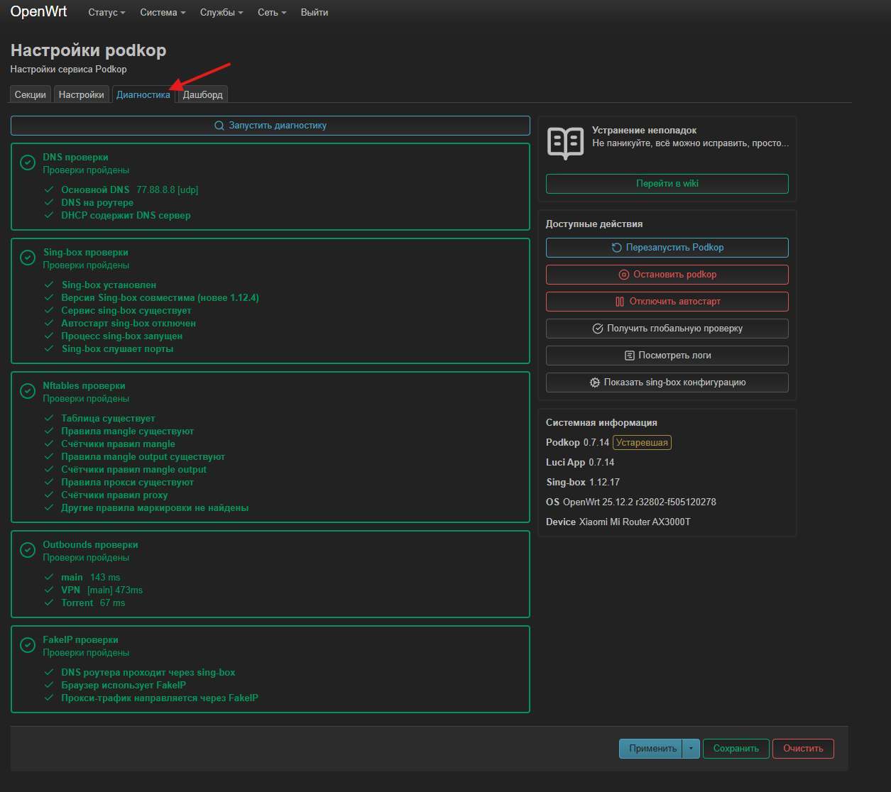
Откройте Службы → podkop → Диагностика и проверьте состояние секций.
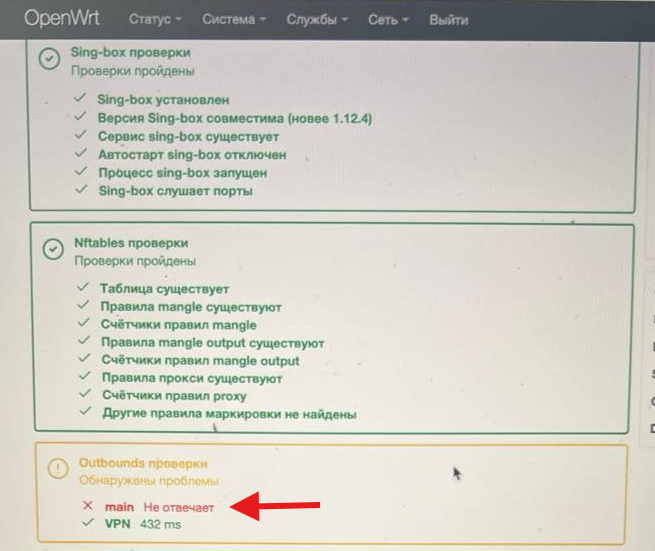
Красная секция показывает, где именно podkop или VPN сейчас не проходит проверку.
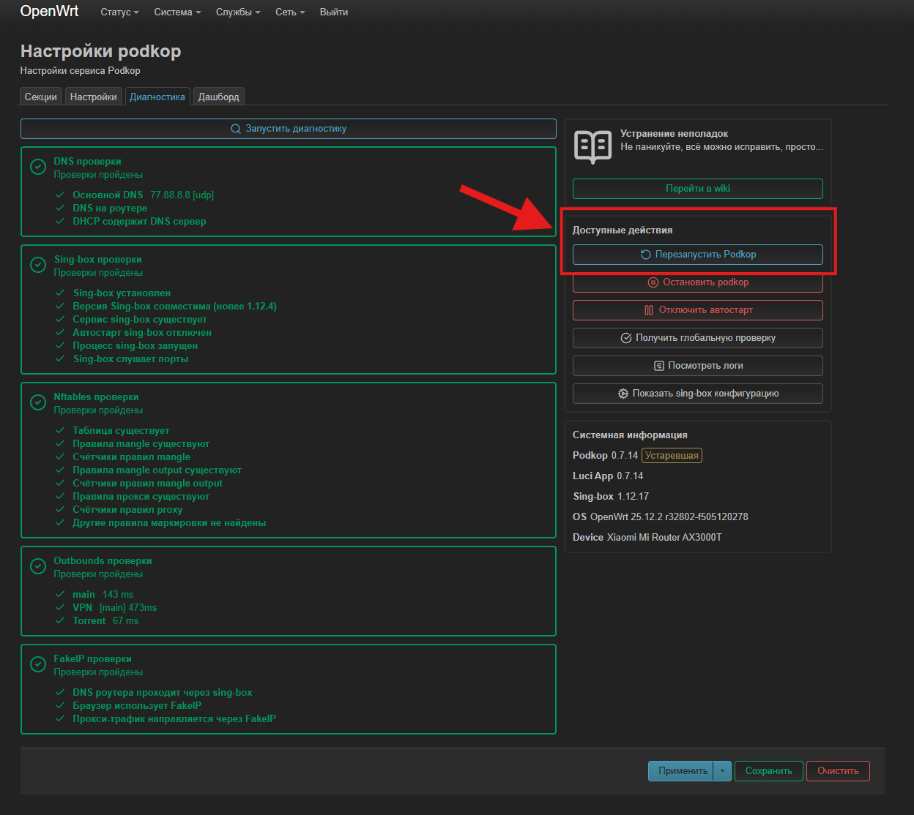
После исправления настроек перезапустите podkop и проверьте диагностику ещё раз.
Как закрепить IP устройства
Закреплённый IP нужен, если вы хотите пустить конкретное устройство через VPN, настроить правила для приставки, телевизора, камеры или умного дома.
Откройте главную страницу админки или список подключённых устройств.
Найдите нужное устройство по имени, MAC-адресу или текущему IP.
Нажмите Закрепить IP рядом с нужным устройством.
Сохраните и примените настройки.
Переподключите устройство к сети и проверьте, что IP не изменился.
Если не получилось
Если непонятно, какое устройство нужное, отключите его от Wi‑Fi и посмотрите, какая строка исчезла.
Проверьте, что закрепляете IP в той же сети, где находится устройство.
После закрепления перезагрузите устройство или переподключите его к Wi‑Fi.
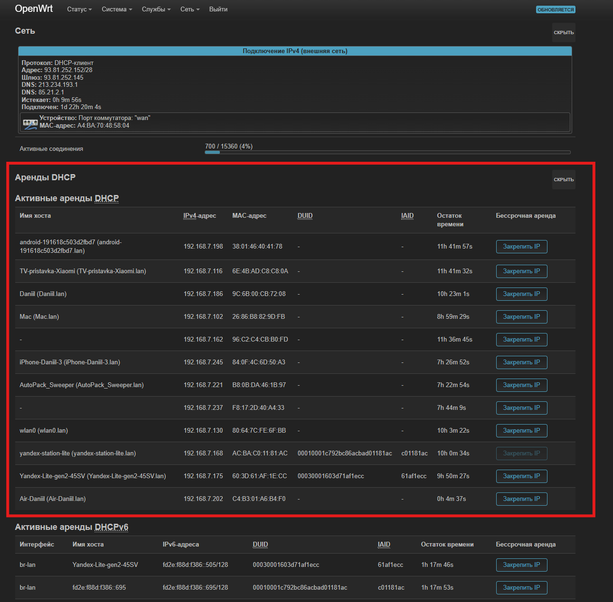
Найдите устройство в списке клиентов по имени, MAC-адресу или текущему IP.
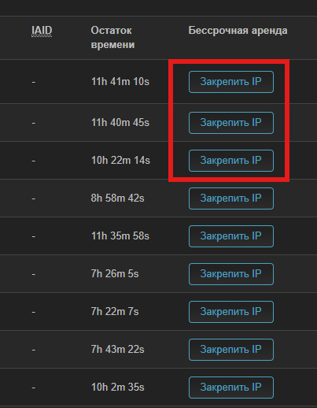
Нажмите кнопку закрепления IP рядом с нужным устройством.
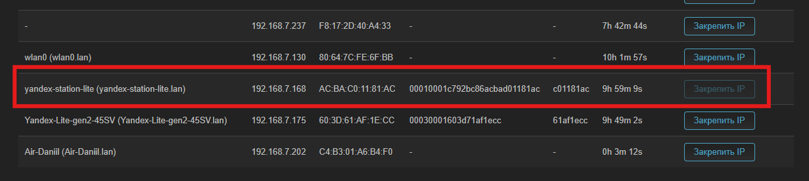
После применения настроек устройство должно появиться с закреплённым адресом.
Что делать после смены провайдера
После смены провайдера чаще всего нужно заново настроить WAN: выбрать DHCP или PPPoE, ввести логин/пароль или обновить MAC-привязку.
Подключите кабель нового провайдера в WAN порт роутера.
Уточните у провайдера тип подключения: DHCP или PPPoE.
Если используется DHCP, проверьте, получает ли WAN-интерфейс IP-адрес автоматически.
Если используется PPPoE, введите новый логин и пароль в настройках WAN.
Если у провайдера есть MAC-привязка, позвоните в поддержку и попросите обновить MAC-адрес роутера.
Сохраните, примените настройки и подождите 1–2 минуты.
Если не получилось
Проверьте, что новый кабель подключен именно в WAN, а не в LAN.
Сверьте PPPoE-логин и пароль с договором или личным кабинетом провайдера.
Если WAN не получает IP по DHCP, уточните MAC-привязку у провайдера.
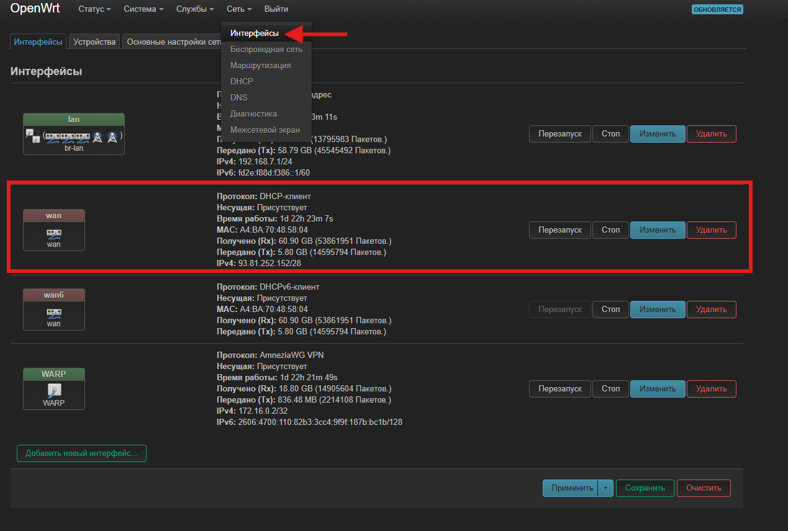
Откройте WAN-интерфейс в разделе Сеть → Интерфейсы.
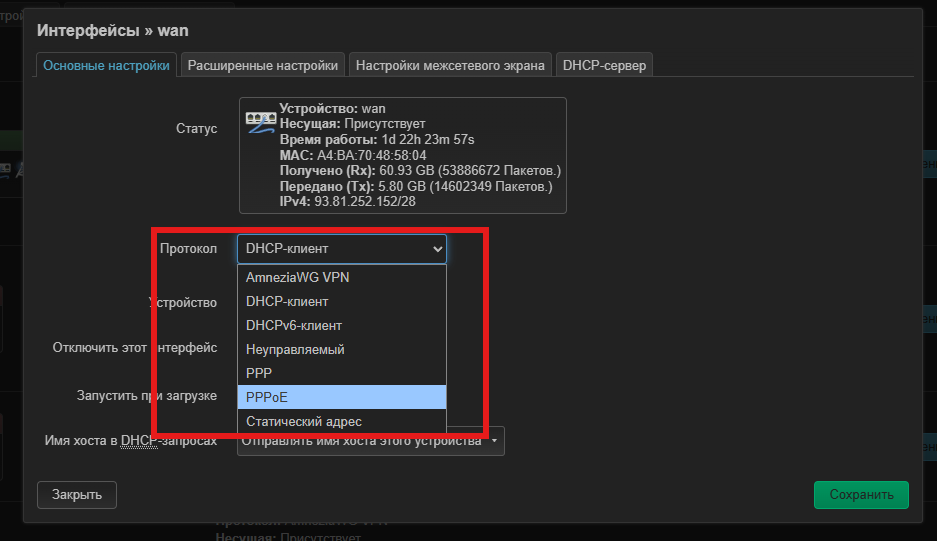
Выберите протокол подключения, который указал новый провайдер: DHCP или PPPoE.
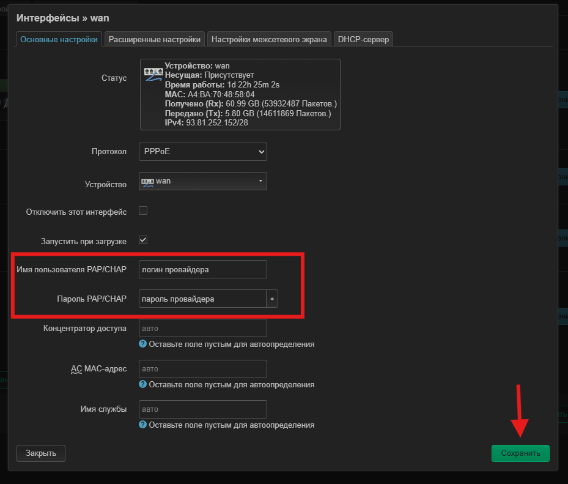
Для PPPoE введите логин и пароль из договора или личного кабинета провайдера.
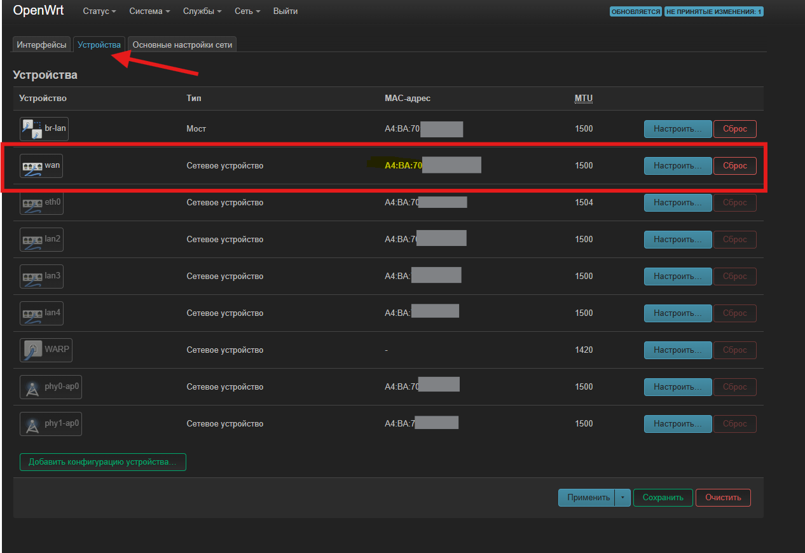
Если у провайдера есть MAC-привязка, сообщите в поддержку MAC-адрес WAN.
Мини-словарь терминов
Короткие расшифровки терминов, которые встречаются в инструкции и настройках OpenWrt.
WAN
Порт и интерфейс для кабеля провайдера. Через него роутер получает интернет.
LAN
Локальная сеть дома: компьютеры, телевизоры, приставки и другие устройства за роутером.
DHCP
Автоматическая выдача сетевых настроек. У провайдера часто означает подключение без логина и пароля.
PPPoE
Тип подключения, где нужен логин и пароль от провайдера.
DNS
Сервис, который переводит адрес сайта вроде example.com в IP-адрес. Если DNS в podkop работает нестабильно, сайты могут открываться только напрямую или только через VPN.
VPN
Подключение, которое отправляет трафик через другой сервер или страну.
podkop
Сервис на роутере для маршрутизации выбранных доменов или устройств через нужное подключение.
VLESS
Один из протоколов VPN/прокси, который часто используется в готовых конфигурациях.
URLTest
Режим автоматического выбора конфигурации с лучшей доступностью или меньшей задержкой.
Selector
Режим ручного выбора нужной VPN-конфигурации или локации.
Если термин всё ещё непонятен
Воспользуйтесь поиском по инструкции: многие термины встречаются в практических разделах выше.
Если в интерфейсе OpenWrt название отличается, ориентируйтесь на английский термин: WAN, LAN, DHCP, PPPoE или DNS.
Для VPN-терминов сначала смотрите разделы про podkop, VLESS, URLTest и Selector.
FAQ
Не открывается 192.168.1.1
Проверьте, что вы подключены к этому роутеру по LAN или Wi‑Fi, отключите VPN на устройстве и откройте http://192.168.1.1 в другом браузере.
Что такое WAN и LAN?
WAN — порт для кабеля провайдера. LAN — порт для компьютера, телевизора или другого устройства внутри вашей домашней сети.
Где взять PPPoE логин и пароль?
Обычно они указаны в договоре с провайдером, в личном кабинете или выдаются службой поддержки. Если провайдер использует DHCP, PPPoE-данные могут не понадобиться.
Почему устройство не видит Wi‑Fi?
Частая причина — автоматический выбор канала. Поставьте фиксированный канал для 2.4G или 5G, примените настройки и переподключите устройство.
Что делать, если VPN не заработал?
Проверьте конфиг, примените настройки, откройте диагностику podkop и убедитесь, что нужная секция не горит красным. Если нужно, перезапустите сервис.
Почему открываются только прямые сайты или только сайты через VPN?
Часто это похоже на проблему DNS в podkop. Откройте Службы → podkop → Настройки, выберите UDP незащищенный, укажите DNS-сервер и Bootstrap DNS-сервер, примените настройки и перезапустите podkop.
Зачем делать резервную копию настроек?
Backup позволяет быстро вернуть рабочую конфигурацию после неудачных изменений, сброса или смены провайдера.
Как восстановить доступ после сброса?
После reset Wi‑Fi на OpenWrt обычно не поднимается, поэтому подключитесь к роутеру по LAN-кабелю и откройте http://192.168.1.1. Перед полным восстановлением backup установите через SSH недостающие пакеты podkop и AmneziaWG.
Что проверить после смены провайдера?
Проверьте WAN-кабель, тип подключения DHCP или PPPoE, логин и пароль провайдера, а также возможную MAC-привязку.
Финальный шаг
Инструкция помогла?
Если всё заработало, буду благодарен за отзыв на Авито. Это помогает другим покупателям быстрее понять, что роутер уже подготовлен и инструкция рабочая.